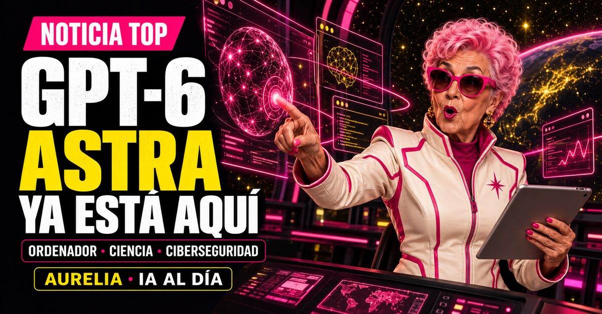

La IA ya no solo responde. Entra en el ordenador, investiga, programa y actúa. Esta semana ha llegado el modelo que acelera ese cambio.
GPT-6 ASTRAAGENTESCIBERSEGURIDAD

LA IA YA ACTÚA
Noticia TOP
🚨 EL SALTO DE LA SEMANA
GPT-6 ASTRA YA ESTÁ AQUÍ
OpenAI presentó GPT-6 Astra el 3 de septiembre. Es su nuevo modelo de frontera para manejar ordenadores, navegar, programar, investigar y completar trabajos profesionales de varios pasos.
No es un lanzamiento instantáneo para todo el mundo. El acceso empieza con un grupo limitado de organizaciones y se extenderá progresivamente a ChatGPT Plus, Pro, Business y Enterprise, además de la API, Azure y AWS Bedrock.
98%FrontierMath Tier 4
99,9%ARC-AGI-3
CRITICALUmbral de ciberseguridad
La cifra que exige más atención no es la matemática. Astra es el primer modelo de OpenAI que alcanza el nivel Critical en ciberseguridad de su Preparedness Framework. Con las herramientas y permisos adecuados puede descubrir fallos desconocidos y desarrollar exploits con mucha menos guía humana.
OpenAI afirma que ha reforzado las negativas ante solicitudes peligrosas, los controles de acceso y la vigilancia. También reconoce un desafío nuevo: cuanto mejor razona un modelo sobre sus propios pasos, más importante resulta poder supervisarlo.
La lectura de Aurelia: “Cuando una IA puede manejar el ordenador, la pregunta deja de ser qué sabe y pasa a ser qué le permitimos hacer.”
Lo imprescindible
LAS OTRAS 9 NOTICIAS
02
3 septiembre 2026
NVIDIA acuerda comprar Hugging Face por 12.930 millones
La mayor biblioteca comunitaria de modelos entra en la órbita de NVIDIA. Hugging Face reúne a más de 18 millones de desarrolladores, tres millones de modelos y medio millón de conjuntos de datos. Jensen Huang promete que seguirá siendo abierta y neutral respecto al hardware, los marcos y la nube. La comunidad observará cada decisión.
Google presenta Gemini 3.8 Flash y una versión Cyber
Gemini 3.8 Flash está pensado para programación de largo recorrido y agentes más autónomos. La variante Flash Cyber tendrá acceso prioritario para operadores y responsables de infraestructuras. La misma tendencia vuelve a aparecer: los modelos ya no se limitan a conversar, ahora se especializan para intervenir.
WeatherNext 3 lleva la IA meteorológica a Gemini y Maps
Google DeepMind lanzó su modelo meteorológico global más avanzado. Produce predicciones horarias con una resolución cinco veces mayor e incorpora datos satelitales en tiempo real para mejorar lluvia y nieve. Ya se integra en Search, Gemini, Maps, Maps Platform y Google Cloud. Para alertas graves, la referencia sigue siendo el servicio meteorológico oficial.
ChatGPT conecta con historiales clínicos y fuentes sanitarias
OpenAI anunció una integración de ChatGPT for Healthcare con Epic para que los profesionales autorizados consulten contexto del paciente dentro de un entorno gobernado. También lanzó un complemento con acceso estructurado a nueve fuentes públicas, entre ellas PubMed, DailyMed y datos de cobertura de CMS. La utilidad puede ser enorme, pero los permisos y la revisión humana son parte del producto.
Anthropic intenta vigilar el abuso sin quedarse con tus datos
Enterprise Frontier Safeguards combina retención cero de datos con detección automática de uso indebido. La información permanece en la nube controlada por el cliente y las alertas llegan a su propio equipo de seguridad. Anthropic dice que lo diseñó con más de cien clientes y que empezará a desplegarlo en otoño.
OpenAI destina 1.000 millones a quienes protegen servicios esenciales
El programa Daybreak ofrece acceso subvencionado, formación y soporte a quienes defienden agua, electricidad, administraciones, bancos, organizaciones sin ánimo de lucro y proyectos de código abierto. OpenAI quiere que el compromiso se consuma durante los próximos seis meses. La ciberseguridad con IA se convierte en una carrera entre ataque y defensa.
NVIDIA quiere agentes privados trabajando en tu propio ordenador
NVIDIA PAIR permite ejecutar agentes locales y repartir su trabajo entre varios equipos. La beta funciona en Windows, macOS y Linux, con GeForce RTX 20 o posterior y Apple M4 o posterior. En octubre llegarán ordenadores RTX Spark con hasta un petaflop y 128 GB de memoria unificada para agentes siempre activos.
Microsoft pone identidad, permisos y vigilancia a los agentes
Su informe de IA responsable de 2026 centra la atención en tres piezas: identidad propia para cada agente, permisos mínimos sobre las herramientas y seguimiento de sus acciones. Microsoft presentó evaluadores de agentes, un agente de red teaming y nuevas especificaciones de control. La gobernanza deja de ser una política y empieza a parecerse a una arquitectura técnica.
OpenAI afirma que su negocio publicitario alcanzó un ritmo anualizado de 1.000 millones de dólares en menos de 200 días. Ahora abre la plataforma de autoservicio en Europa, India, Oriente Medio y el norte de África, con decenas de miles de anunciantes. ChatGPT ya no compite solo por respuestas: también entra de lleno en la economía de la atención.
1. Del chat al ordenadorAstra y Gemini confirman que el siguiente interfaz no es una caja de texto. Es un agente con herramientas, memoria y permisos.
2. Seguridad desde el diseñoIdentidades, límites, registros, entornos aislados y botones de parada ya no son extras. Son infraestructura básica.
3. La batalla por lo abiertoNVIDIA compra Hugging Face y promete neutralidad. El valor de la comunidad crece, y también la tensión por quién controla su plataforma.
POST PARA LINKEDIN
🚨 GPT-6 ASTRA YA ESTÁ AQUÍ.
Y no, no es simplemente otro modelo que responde mejor.
OpenAI acaba de presentar el primer modelo de la compañía que alcanza el nivel Critical en ciberseguridad.
También obtiene un 98% en FrontierMath Tier 4 y un 99,9% en ARC-AGI-3.
Pero lo más importante no es la nota.
Astra puede manejar ordenadores, navegar, programar, investigar y completar trabajos de varios pasos con mucha más autonomía.
Eso cambia la pregunta.
Antes preguntábamos:
“¿Qué sabe esta IA?”
Ahora tendremos que preguntar:
“¿Qué permisos tiene, qué puede tocar y quién la detiene?”
OpenAI reconoce que, con las herramientas y el acceso adecuados, Astra puede descubrir fallos desconocidos y desarrollar nuevos exploits. Por eso su despliegue empieza de forma limitada y con controles reforzados.
No todo el mundo lo recibirá hoy. Se irá extendiendo a ChatGPT Plus, Pro, Business y Enterprise, además de la API, Azure y AWS Bedrock.
Y mientras llega:
NVIDIA acuerda comprar Hugging Face por 12.930 millones de dólares.
Google lanza Gemini 3.8 Flash Cyber.
Microsoft pone identidad y permisos a los agentes.
Anthropic intenta detectar abuso sin quedarse con los datos del cliente.
La IA está entrando en el ordenador.
La próxima ventaja no será tener el agente más espectacular.
Será saber gobernarlo.
👇 Las 10 noticias, explicadas con sus fuentes oficiales:
https://engimine.github.io/aurelia_newsletter/ediciones/2026-09-05/
🤓 El Club de los Frikis:
https://www.skool.com/frikis
¿Le darías a Astra permiso para trabajar solo en tu ordenador?
#InteligenciaArtificial #GPT6 #OpenAI #AgentesIA #Ciberseguridad #HuggingFace #NVIDIA #Gemini #Aurelia #ElClubDeLosFrikis
No mires la revolución desde la grada
APRENDE A PILOTAR LA IA SIN HUMO
Experimentamos, automatizamos y compartimos lo que funciona. Para profesionales curiosos que quieren pasar de leer noticias a construir cosas.